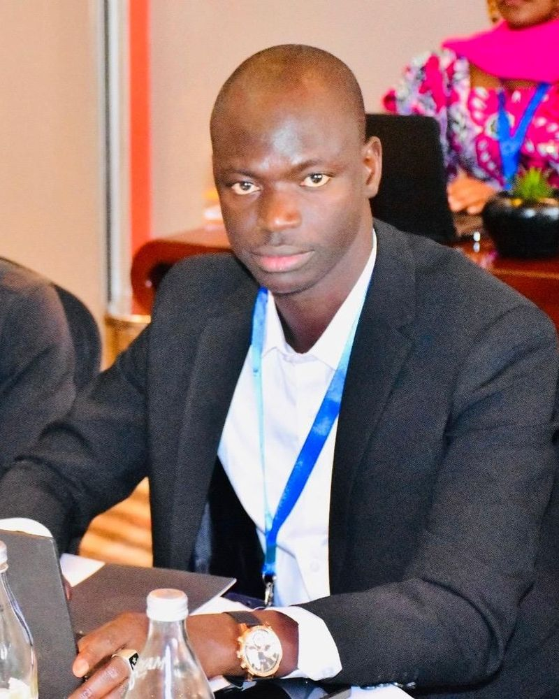
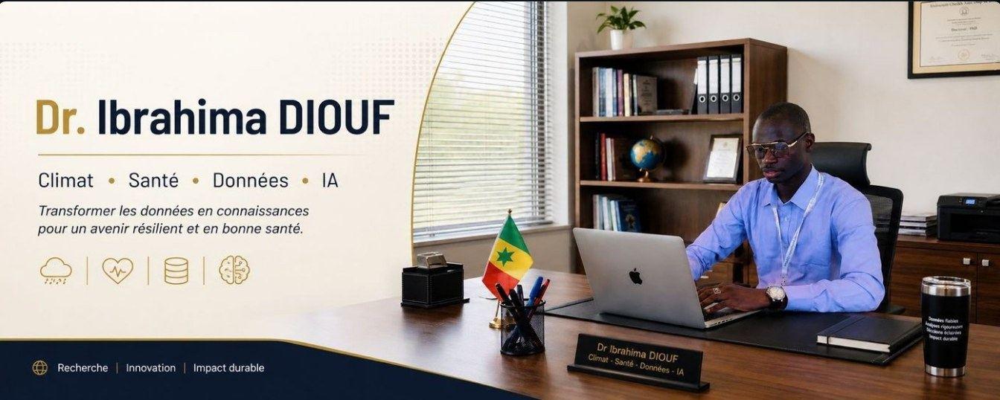
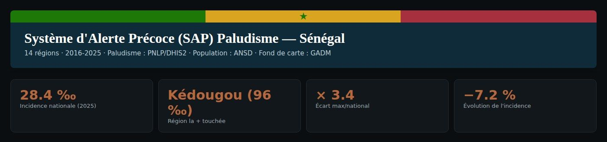

Climat & santé
Interactions climat-santé et prévision saisonnière en Afrique de l'Ouest : effets de la variabilité et du changement climatiques sur les maladies à transmission vectorielle.
Réunions du GIEC, conférences, ateliers, formations et missions d’assistance technique : quelques moments de terrain.
Enseignant-chercheur en climat & santé et consultant international. Depuis quinze ans, je modélise le lien entre variabilité climatique et maladies à transmission vectorielle, et je transforme ces modèles en systèmes d'alerte précoce utilisables par les systèmes de santé africains.


Quinze années de recherche interdisciplinaire, de la thèse sur le paludisme saisonnier au Sahel jusqu'aux évaluations du GIEC — avec des projets financés par l'Union européenne (FP7), l'USAID, l'OMS, l'UNICEF, la NOAA et l'IRD.
Indicateurs bibliométriques — Google Scholar, septembre 2026.
PythonRMATLABFORTRANSIGLinux
VECTRILMMS4CASTCPTCMTCMIP5/6
UE FP7 — QWeCI, PREFACEGEFUSAIDUNICEFNOAA / UCARErasmus Mundus
Une même question traverse tous mes travaux : comment convertir un signal climatique en une décision sanitaire utile, à temps et à la bonne échelle ?
Interactions climat-santé et prévision saisonnière en Afrique de l'Ouest : effets de la variabilité et du changement climatiques sur les maladies à transmission vectorielle.
Modèles dynamiques VECTRI et LMM couplés à l'atmosphère et à l'hydrologie, forcés par observations, réanalyses et projections CMIP5/CMIP6 corrigées de biais.
Outils d'alerte précoce, cartographie du risque, évaluations de vulnérabilité et appui aux plans nationaux d'adaptation et à la résilience des systèmes de santé.
Apprentissage automatique appliqué à la prévision climat-santé : incidence du paludisme, hospitalisations liées aux canicules, qualité des produits de pluie maillés.
Mes travaux ne s'arrêtent pas à l'article : ils deviennent des applications interactives, ouvertes et reproductibles, hébergées sur Hugging Face.

Tendances des extrêmes de pluie au Sénégal, validation CMIP6.
Paludisme et précipitations extrêmes sous scénarios futurs.
Vulnérabilité climat-santé par région et par saison.
L'ensemble des applications et outils sur mon profil Hugging Face.
Une recherche pensée pour être utilisée : évaluations internationales, appui aux programmes nationaux et outils opérationnels.
Auteur principal du chapitre 7 « Afrique » du Septième Rapport d'évaluation (Groupe de travail II) : synthèse des risques climat-santé et des options d'adaptation pour les gouvernements.
Team Lead francophone pour l'intégration climat-santé : missions d'assistance technique au Sénégal, au Niger, en RCA, au Burundi et en Guinée-Bissau.
Surveillance intégrée des maladies vectorielles liées au climat : analyse de données, cartographie du risque et recommandations de politique publique.
56 publications et communications recensées sur Google Scholar — 586 citations, indice h 13. Les 40 travaux revus par les pairs ci-dessous, dont 4 en cours de révision.
Mis à jour automatiquement chaque jour depuis Google Scholar.
De la thèse sur le paludisme saisonnier au Sahel aux évaluations internationales du climat.
Auteur principal du chapitre 7 « Afrique » du Septième Rapport d'évaluation.
Enseignement et recherche en climat et santé ; encadrement de masters et de doctorants ; coordination de modules en sciences de l'environnement.
Surveillance et contrôle intégrés des maladies vectorielles liées au changement climatique : analyse de données, cartographie du risque, recommandations de politique publique.
Renforcement de la résilience du système de santé face aux risques climatiques ; conduite des évaluations de vulnérabilité et appui à la conception des stratégies.
Expertise sur les liens climat-santé, évaluations de vulnérabilité communautaire et appui à la planification de l'adaptation.
Contribution au Plan National d'Adaptation du Sénégal : formation des parties prenantes, matériels pédagogiques et conseil aux ministères sur l'usage des données d'adaptation.
Modélisation du paludisme et de la variabilité climatique en Afrique ; développement d'outils d'alerte précoce ; coordination de collaborations internationales.
Influence de l'Atlantique tropical sur la santé publique en Afrique de l'Ouest ; intégration d'indicateurs climatiques dans les politiques de santé.
Construction de bases de données climat-paludisme et test de modèles dynamiques ; intégration des prévisions saisonnières dans les systèmes de santé ouest-africains.
ESP/UCAD · 2010 — 2016
ESP/UCAD · 2009 — 2010
FST/UCAD · 2006 — 2008
Expertise, évaluation, formation, encadrement doctoral ou développement d'outils climat-santé : je réponds aux sollicitations institutionnelles et académiques.